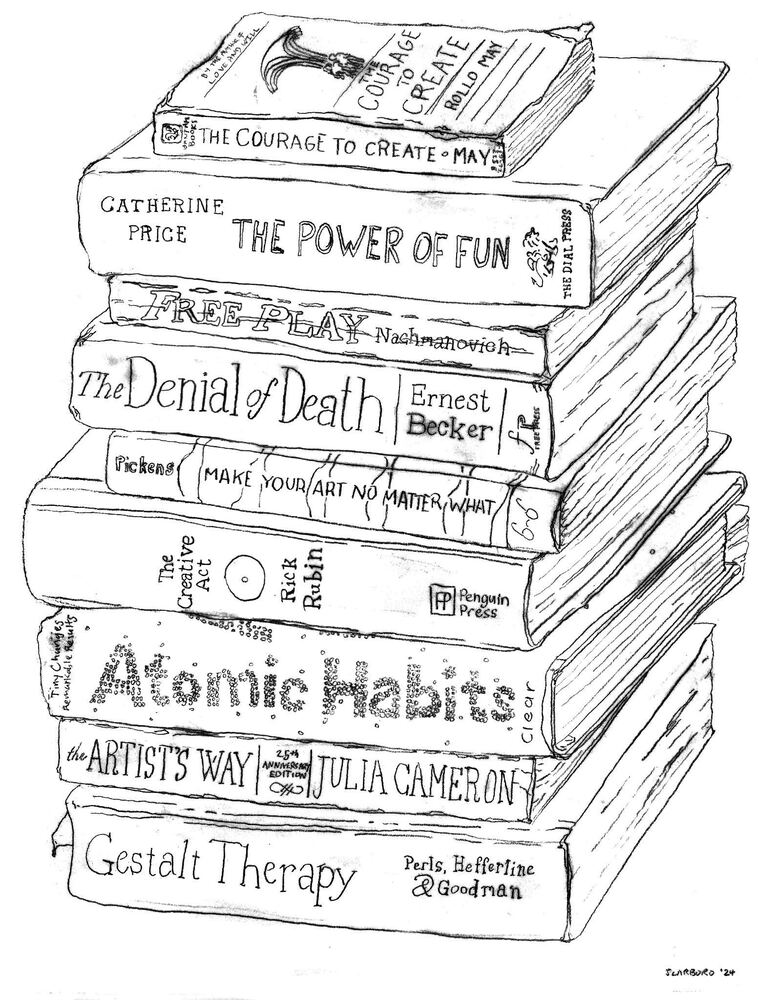

What I help with
Many of the folks I work with are pretty good at keeping their shit together. They show up for work, take care of their responsibilities, and generally manage to get by. But underneath, something isn't working.
Maybe you're burned out, unhappy in a relationship, or unsure what you actually want. Maybe you've built a life that looks fine on paper but doesn't feel much like yours. You might spend more time than you'd like distracting yourself or thinking about making changes than actually making them.
I help people get unstuck when the way they're living isn't working anymore. That might mean learning to deal with conflict instead of avoiding it, figuring out what you feel and want instead of defaulting to what other people expect, or understanding why you keep reaching for the same habits even when they're making you miserable or numbing you out.
I also work with trauma, especially when past experiences continue to shape how you see yourself and relate to other people. Often, the ways we learned to get by made sense at the time. The trouble is when we keep relying on them long after they've stopped working.
You don't need to be falling apart to come to therapy. You might just be tired of going through the motions and ready to do something about it. You don't have to know exactly what needs to change, either. Wherever you are and whatever you're dealing with, we can start right there.
How I do therapy
I draw most on Gestalt therapy, which, unless you geek out on therapy theory like I do, may not mean much to you. In Gestalt, we pay attention to what's happening right here, right now: what you feel in your body, how you’re making sense of your experience, and how you relate to other people, including me. We slow things way down and get closer to what your attention is actually with from moment to moment. Sometimes we run an experiment to see what happens when you do something differently or pay attention to something you'd usually gloss over. This helps us spot patterns you might not see on your own and figure out how some of the ways you've learned to cope might be keeping you stuck.
I also use Mentalization-Based Narrative Exposure Therapy (MBNET), a trauma-focused approach that helps you make sense of painful experiences and how they continue to shape your life. We revisit what happened, pay attention to the feelings and beliefs you developed around it, and get curious about how you came to understand yourself and other people in the process. The aim is to put the past in context, so you have more freedom in how you respond to what's happening now.
I'll be direct with you, challenge you when it seems useful, and take your experience seriously. We'll work together to see you more clearly, face what you've been avoiding, and have more say in how you live.

Rather than just talking about your problems or trying to think your way through them, the aim is to help you encounter yourself and your life in a way that feels fresh.